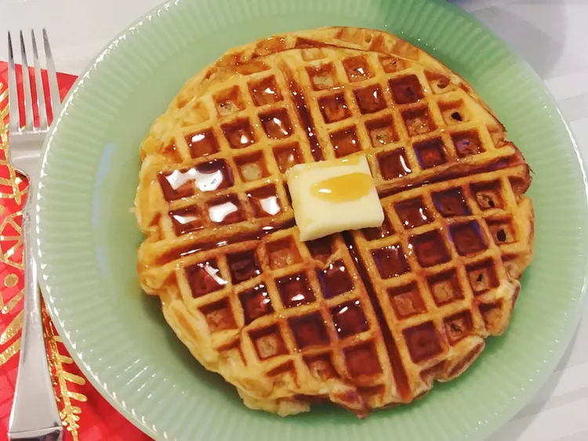

Eggnog Waffles

- Prep time: 10 Minutes
- Cook time: 20 Minutes
- Total time: 30 Minutes
- Servings: 4
- Yield: 4 Waffles
- 2 cups all-purpose flour
- 1 teaspoon baking powder
- 1 teaspoon baking soda
- 1 teaspoon baking soda
- 2 cups eggnog
- 2 eggs, beaten
- 4 tablespoons butter, melted
- Mix flour, baking powder, baking soda, and salt together in a bowl. Add eggnog, eggs, and butter; mix well.
- Preheat a waffle iron according to manufacturer's instructions. Pour 1/4 of the batter into the preheated iron and cook until waffle is crisp and golden, about 5 minutes. Repeat with remaining batter.